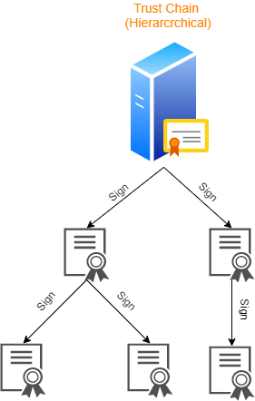
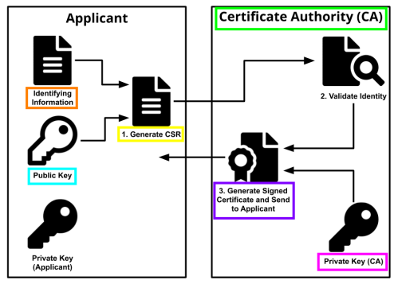

Trust Chain (Hierarchical)
Certificate
Authority(CA)Certificate Authority (CA) is a trusted organization that issues public key
certificates. Who wants to verify an
identity has to trust the
CA.
Digital Certificate
Certificate Authority(CA) digital-sign the
certificate signing request (CSR) that contain the binded couple <
Identifying_Information,
Public_Key>
This mean that the
CA sign with his
private
key(CA) the
CSR certifying that the informations contained in the
CSR are correct and it will create a new file:
the
digital certificate(e.g.: X.509)
To know the informations contained in the
digital certificate the user have to use the
public
key of
CABibliography:
X.509:
https://en.wikipedia.org/wiki/X.509
Public Key Certificate:
https://www.ssl.com/faqs/what-is-a-certificate-authority/